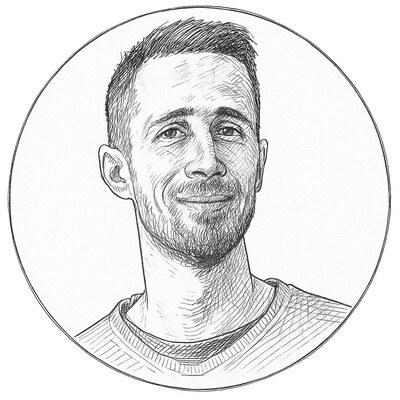

Candidature · Marketing & Business Support Manager, Poils & Plumes

QuentinMichel
Digital Marketing Manager aux Éditions du Lombard. Un couteau suisse du web marketing : réseaux sociaux, campagnes, e-mailing, sites web et outils d'IA. Et le maître de Virgile et de Cléo.
Design, textes en trois langues et mise en ligne : je pilote, l'IA exécute, je relis et je corrige.
Contenus web
Encodage des actualités, des événements et des citations sur le site.
Réseaux sociaux
Création de vidéos et de carrousels photos, montage d'interviews et de trailers.
Documents
Mise en page de présentations PowerPoint et de PDF.
Sites web
Conception de sites web complets, de la maquette à la mise en ligne.
Image, vidéo, 3D
Génération assistée par IA, ou sans IA : je maîtrise la suite Adobe.
Outils
Claude Code
ChatGPT
Copilot
Grok
Gemini
Higgsfield
Artlist
Firefly
Veed
Adobe Creative Cloud
Marketing & Business Support Manager · WavreVotre offre, mes preuves
Marketing automation
Différents outils CRM maîtrisés et utilisés depuis 2016, tels que Brevo ou HubSpot. Gestion de bases de données dans le respect du RGPD, conception d'e-mailings (HTML et WYSIWYG), envoi de newsletters B2C et B2B pour différentes marques belges, en FR/NL.
L'IA pour les magasins et le reporting
La plupart de mes tâches sont aujourd'hui réalisées avec l'aide d'outils IA : principalement Claude Code, mais j'ai également travaillé avec ChatGPT, Copilot et Gemini. Maîtrise complète de GA4 et d'autres outils d'analyse, mais les reportings sont désormais réalisés sur mesure par IA.
Réseaux sociaux et plan annuel
Au Lombard : plus de 200 000 abonnés cumulés et des vidéos qui génèrent plusieurs millions de vues. Je maîtrise Meta Ads, TikTok, Snapchat, YouTube, Google Ads et GA4. J'ai été community manager pour un grand nombre de pages Facebook (magasins indépendants) entre 2014 et 2020.
Accompagner un réseau de magasins
J'aide nos auteurs et éditeurs dans leur stratégie digitale. Précédemment web marketeer pour une coopérative de 150 magasins indépendants répartis dans toute la Belgique. Community management, formation et accompagnement des magasins, dans les deux langues.
Marque propre
Expérience en conception d'identité visuelle et en stratégie de marque pour des PME, mais aussi pour des marques nationales (expérience en agence de communication). Accompagnement du développement de marques propres (peinture, outillage) et conception de chartes graphiques.
Initiative, précision, prise de parole
Agence et gestion de projets : un budget à consolider, un planning à tenir, des clients à convaincre. Chez Meno, j'ai formé les magasins aux réseaux sociaux.
Néerlandais, français, anglais
Français langue maternelle, néerlandais B2, anglais B2/C1. Près de quatre ans dans un environnement bilingue chez Meno. Ce site existe en trois langues.
Poils & PlumesPourquoi vous
Une enseigne de plus de 35 ans, une quarantaine de magasins, et des maîtres qui veulent le meilleur pour leur animal.
Votre offre réunit ce que je fais déjà et ce que je veux faire davantage : mettre l'IA au service du marketing et des magasins. C'est un sujet sensible dans l'édition, à cause des droits d'auteur. Chez vous, il peut devenir un vrai levier.
Je connais les réseaux de magasins indépendants : chez Meno, j'ai vu de près leurs défis, leurs contraintes et ce qui les aide vraiment.
Et je suis un grand ami des animaux, à poils ou à plumes, avec une légère préférence pour les premiers.
Un chien · Un chatVirgile & Cléo
J'ai toujours vécu avec des chiens et des chats.
Notre foyer compte aujourd'hui Virgile, un Berger Blanc Suisse de quatre ans, et Cléo, un chat qui vient de fêter ses dix ans.
Je connais donc de l'intérieur les questions qu'un maître se pose en poussant la porte d'une animalerie. Nul doute que tous deux seraient très heureux de cette opportunité chez Poils & Plumes.
Marié, papa d'une petite fille. Le reste du temps : voyager, lire, dessiner et rire.
Je suis curieux de tout ce qui se crée : un bâtiment, une scène, un livre, un dessin. J'aime les promenades avec mon chien, les soirées entre amis autour d'une table de poker.
Ce que j'aime
Les animaux
Voyager
Lecture
Dessin
Architecture et design
One-man show et théâtre
Poker
Soirées entre amis
Caractère
Sociable
Compétitif
Pragmatique
Esprit d'initiative
Humour noir
IA · Social · Paid · Analytics · CréationBoîte à outils